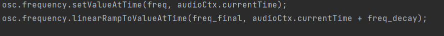
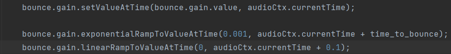
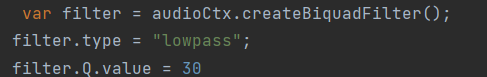

For this project in addition to recreating the babbling brook, I also attempted to replicate the sound of a ball bouncing on the ground. In order to do this I created a loop of oscillators.
After a ball's first bounce, the energy begins to decrease. To show this, I shortened the time inbetween each bounce as the loop went on, as well as decreasing the gain
I also made sure there were envelopes controlling the gains and frequencies. This allowed for a more realistic noise


I also added a lowpass filter on each oscillator. Using the Q value of these filters I was able to add a sort of "bouncy-ness" to the sound

I was going to use FM, however I noticed that without it I could still create a lot of the effects I was aiming for, and it caused the ball to sound too unnatural
The diagram shows my uses of filters and gain nodes I previously mentioned